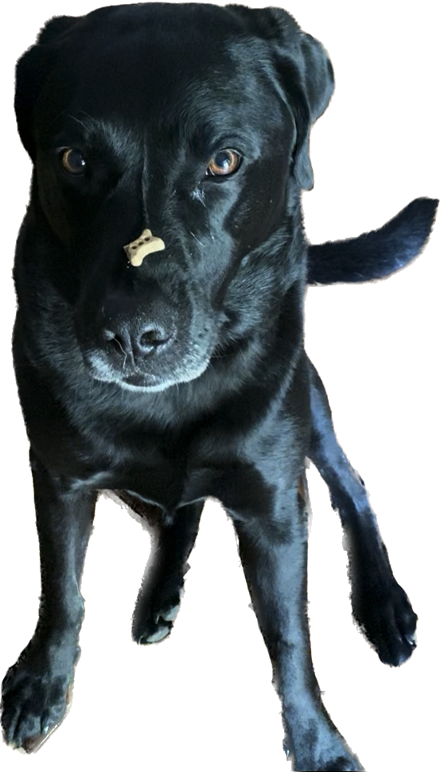

layout: true <div class="my-header"><img src="images/scsdLogo.png" style="height: 70px;"/></div> --- class:halloween ###.gray[2022.10.25] AP Physics .red[Do Now] ####Calculated Estimation - As a lab group, on your whiteboard How far do you travel when you text 'lol' while driving on Maple Hill Road and then react to an object in your path and slam on the brakes? Assumptions: - You have to read and respond to a text message - You are driving at Maple Hill Road (speed limit 18 m/s) - You can brake with an acceleration of 5 m/s/s Use graphs, diagrams, and equations to explain your answer. --- class:halloween #üëª .gray[2022.10.26] AP Physics üéÉ .qotd[❓of the üìÖ: Who would you want to be stuck on an elevator with (anyone past or present)?] 1. Do Now 2. Porter Packet 1.9, #11 & 12 as a lab group HW: - Week 8 - Quiz Tomorrow - Test Friday 11/4 --- class:halloween ###.gray[2022.10.25] AP Physics .red[Do Now] 1. What is the slope of a position vs. time graph? 2. What is the slope of a velocity vs. time graph? 3. What does the area of a velocity vs. time graph represent? 4. What is the difference between distance and displacement? 5. How do you calculate average speed vs. average velocity? 6. When an object is *slowing down* the velocity and acceleration have _____ (the same/ different) signs. --- class:halloween #üëª .gray[2022.10.25] AP Physics üéÉ .qotd[❓of the üìÖ: Should you bite or lick your ice cream?] 1. Do Now 2. The Kinematic Equations & Reference Tables - `\(v_x = v_{x0}+a_x t\)` - `\(x = x_0 + v_{x0}t + \frac{1}{2}a_xt^2\)` - `\(v_x^2=v_{x0}^2+2a_x(x-x_0)\)` 3. Porter Packet 1.10 - Problem-Solving with equations 4. Porter Packet 1.9 - #8-12 HW: - Week 8 Posted (3 Mandatory Physics Classroom Problem Sets) - Quiz Friday - will include word problems! - Test NEXT Friday 11/4 --- class:halloween #üëª .gray[2022.10.20] AP Physics üéÉ .qotd[❓of the üìÖ: Does pineapple belong on a pizza? üççüçï] 1. Quiz 2. More Speed Dates with VT Graphs & Problem Solving HW: - Enjoy your weekend! --- class:halloween #üëª .gray[2022.10.20] AP Physics üéÉ .qotd[❓of the üìÖ: Favorite halloween candy?] 1. Finish 1.8 2. Problem-Solving with VT Graphs [Slides](https://www.mrporterphysics.com/Presentations/APCAPM/talks/problemsolving.html#2) 3. Speed-Dating HW: - Physics Classroom Assignments - Quiz Tomorrow --- class:halloween ###.gray[2022.10.19] AP Physics .red[Do Now] Position versus time graphs for boats traveling along a narrow channel are shown below. The scales on both axes are the same for all of these graphs. .left-column[ .center[<img src="images/xtgraphss.jpg" width = "100%"/>] ] .right-column[ ***For which of these cases, if any,*** 3. is the position zero at the indicated point? 4. is the position negative at the indicated point? 5. is the velocity zero at the indicated point? 6. is the velocity negative at the indicated point? 7. is the acceleration zero at the indicated point? 8. is the acceleration negative at the indicated point? ] --- class:halloween #üëª .gray[2022.10.19] AP Physics üéÉ .qotd[❓of the üìÖ: What did your parents almost name you?] 1. Do Now 2. AP Workbook 1G & 1H 3. VT Graphs Review 4. Porter Packet 1.8 5. Check Stacks of Graphs Answers HW: - Physics Classroom Assignments --- class:halloween #üëª .gray[2022.10.17] AP Physics üéÉ .qotd[❓of the üìÖ: What's your favorite fast food chain?] 1. Go over carts and ramps 3. Card Sort 4. Compare Homework Answers in group - You will whiteboard 2 stacks with a partner 5. Checking Stacks of Graphs 4. 1.8 VT Graphs with changing velocity HW: - Posted in Canvas - practice/checking understanding for things we have covered this year ***AP CHECKS DUE FRIDAY, OCTOBER 21, 2022*** --- ##.gray[2022.10.14] .blue[AP Physics] .red[Do Now] .left-column[The position-time graph shown represents the motion of two children, Ariel and Byron, who are moving along a narrow, straight hallway. .center[] ] .right-column[1. Do either of the children ever change direction? If so when does this happen? Explain your reasoning. 2. Are the two children ever at the same position along the hallway? If so when does this happen? Explain your reasoning. 3. Do the two children ever have the same speed? If so when does this happen? Explain your reasoning. 4. Do the two children ever have the same acceleration? If so when does this happen? Explain your reasoning.] --- ##.gray[2022.10.14] .blue[AP Physics] .qotd[❓of the üìÖ: If you had to delete all but 3 apps from your smartphone, which ones would you keep?] 1. Do Now 2. Finish Recording Card Sort 5. Carts & Ramps Measurements - ***NOTE*** Numbers on card sort DO NOT match numbers in packet -- match motion description for your predictions - ‚¨Ü Increasing = going away from zero, ‚¨á Decreasing = going towards zero 3. Porter Packet - 1.6 Accelerated Motion Representations 4. Card Sort Version 2 HW: - Porter Packet - 1.7 Stacks of Graphs (Need this done for class on Monday!) --- ##.gray[2022.10.13] .blue[AP Physics] .qotd[❓of the üìÖ: What would you sing at karaoke night? üé§] 1. Pick Up Handout Packet on front desk 1. Quiz 2. Board Meeting - Ramp Lab 3. New Lab Groups 4. Carts & Ramps Card Sort 5. Carts & Ramps Measurements - ***NOTE*** Numbers on card sort DO NOT match numbers in packet -- match motion description for your predictions - ‚¨Ü Increasing = going away from zero, ‚¨á Decreasing = going towards zero --- ##.gray[2022.10.11] .blue[AP Physics] .red[Do Now] Gabriele enters an east-west straight bike path at the 3.0-km mark and rides west at a constant speed of 8.0 m/s. At the same time, Xena rides east from the 1.0-km mark at a constant speed of 6.0 m/s. (a) Sketch the physics diagrams of this situation. - Sketch the initial conditions - Sketch a position - time graph and label any important information (i.e. known slopes/intercepts)) (b) Write functions x(t) that describe their positions as a function of time with respect to Earth. (c) Where do they meet each other? -- (d) Write a function x(t) that describes Xena's motion with respect to Gabriele. --- ##.gray[2022.10.11] .blue[AP Physics] .qotd[❓of the üìÖ: Does your family have a ‚Äúmotto‚Äù ‚Äì spoken or unspoken?] 1. Do Now & Check In 3. Finish Ramp Lab: - Time = 0 seconds is when the ribbon is cut!!! Reset your clock when taking data. (If already done, subtract from each of your times) - How to make a VT Graph 4. Ramp Lab Board Meeting: - Whiteboard Linearized XT and VT Graphs with Equations - Does the puck speed up? Does it speed up constantly? What do the slopes and intercepts mean? - Does the ramp angle have an effect? If so what? 5. Carts and Ramps Card Sort HW: Finish Rolling Ball Challenge, QUIZ Wednesday -- I will post a practice on Canvas --- ##.gray[2022.10.04] .blue[AP Physics] .qotd[❓of the üìÖ: Would you rather fight 100 duck-sized horses or 1 horse-sized duck?] 1. Do Now: 1.4 Porter Packet 2. Quiz 3. Relative Motion + Pivot - Relative Motion + AP Workbook 1.E ####HW: - AP Workbook 1.C & 1.D --- ##Velocity vs. Time Graphs Area "Under" the Curve is the **displacement** of the object .center[<img src="images/vtexample1.jpg" width = "350 px"/><img src="images/vtexample2.jpg" width = "350 px"/><img src="images/vtexample3.jpg" width = "350 px"/>] --- ##.gray[2022.10.03] .blue[AP Physics] .red[Do Now] Each graph below shows the position of an object as a function of time. .center[<img src="images/Xtrank.jpg" width="1000 px"/> ] **Rank the objects from greatest to least *displacement* from 0 to 4 seconds.** **Rank the objects from greatest to least *distance* from 0 to 4 seconds.** --- ##.gray[2022.10.03] .blue[AP Physics] .qotd[❓of the üìÖ: Would you rather be a dragon or own a dragon? üê≤üêâ] 1. Finish Up Walk the Graph lab - whiteboard 2. Average vs. Instantaneous Velocity + Porter Packet 1.3 + AP Workbook 1.C 3. Working with Velocity vs. time graphs + Porter Packet 1.4 HW: - Quiz tomorrow on multiple representations --- #Average vs. Instantaneous -- ###Average Velocity - Displacement divided by time: `\(\bar{v} = \frac{\Delta x}{\Delta t}\)` - Slope connecting two points on x vs. t graph -- ###Instantaneous Velocity - How fast and what direction an obj ect is moving at a specific moment in time - Slope at a single time (tangent line) --- ##.gray[2022.09.30] .blue[AP Physics] .red[Do Now] The graphs below show the position versus time for six boats traveling along a narrow channel. The scales on both axes are the same for all of these graphs. In each graph, a point is marked with a dot. .center[] Rank these situations on the basis of the speed of the boat at the point indicated from greatest to least speed. Explain your reasoning. -- Draw a velocity vs. time graph for each displayed position vs. time graph. --- ##.gray[2022.09.30] .blue[AP Physics] .qotd[❓of the üìÖ: Who is your celebrity crush?] 1. Do Now 2. [Download Graphical Analysis](https://www.vernier.com/products/graphical-analysis/free/) 2. Motion Sensor Lab (Porter Workbook 1.2 - page 7) 1. Interpret Graph: How can you walk this motion? 2. Walk the graph and check your prediction - make sure you walk it until you get a good enough match! 3. Complete other representations of motion (description, motion map, velocity vs. time graph) 3. Interpreting Position vs. Time Graphs HW: AP Workbook 1.C & 1.D --- ##.gray[2022.09.28] .blue[AP Physics] .red[Do Now] Describe a situation where: 1. Distance, displacement, and final position are all the **SAME** 2. Distance, displacement, and final position are all **DIFFERENT** --- ##.gray[2022.09.28] .blue[AP Physics] .qotd[❓of the üìÖ: If you had a boat, what would you name it?] 1. Do Now: Distance and Displacement 2. Motion Maps → How? 3. Multiple Representation Practice (Porter Workbook 1.1 - page 4) 4. Interpreting Position vs. time graphs (Porter Workbook 1.3 - page 11) --- --- ##.gray[2022.09.27] .blue[AP Physics] .red[Do Now] An overhead snapshot of Dorothy and Toto walking along the yellow brick road is shown below. From start to finish, who travels farther? Justify your answer. .center[] --- #How Far? - ***Position*** - location in set coordinate system -- - ***Distance*** - path length, "straighten out" path length and measure the length -- - ***Displacement*** - change in position, how far away an object is from its initial position --- ##.gray[2022.09.27] .blue[AP Physics] .qotd[❓of the üìÖ: Is cake better than ice cream?] 1. Do Now: How Far? 1. Buggy Lab Quiz 2. Does it move with [CV CER](https://www.mrporterphysics.com/Presentations/APCVPM/talks/APCVPM.html#1) 3. Multiple Representations --- ##.gray[2022.09.26] .blue[AP Physics] .qotd[❓of the üìÖ: How do you feel about clowns?] 1. Do Now: Whiteboard Buggy Results 2. Buggy Board Meeting 3. ‚ÄúConsistent Motion‚Äù Model & Notes 4. Does it move with [CV CER](https://www.mrporterphysics.com/Presentations/APCVPM/talks/APCVPM.html#1) HW: - Buggy Lab Quiz --- ##.gray[2022.09.22] .blue[AP Physics] .qotd[❓of the üìÖ: Do you collect anything?] 1. Buggy Lab Part II: Create a descriptive (both verbal and mathematical) model of the motion of toy cars. + How is **position** related to **time** for your toy car? + Remember to use starting positions on card situations + Take data for one car at a time + **Time** is your independent variable + Graph the motion of both cars on the SAME graph (you can add another data set to the vertical axis that goes with the 2. Whiteboard & Board Meeting + What does the slope represent? + What does the intercept represent? --- ##.gray[2022.09.21] .blue[AP Physics] .qotd[❓of the üìÖ: Hanging out by a camp fire, bonfire, or fireplace?] 1. Lab Quiz: + Complete + Scan to Canvas + Hand in (under safety google cabinet) 2. Buggy Lab Part 1: Does it move in a consistent manner? + Complete & Whiteboard 3. Buggy Lab Part 2: Comparing Buggies --- ## AP Exam information - AP exam fee: $88 (for each exam) Students can pay for multiple exams with one check - Submitted to Guidance by Friday, October 22nd - Checks payable to ***Schodack Central Schools*** - Students who are eligible for free or reduced lunch should see their guidance counselor about fee reductions (we do not have access to the names of students who qualify so students should notify us directly). - !!! Exams having to be ordered past the final College Board November 15th deadline due to late payment will incur an additional $40 late fee. !!! --- ##.gray[2022.09.20] .blue[AP Physics] .qotd[❓of the üìÖ: Which of the five senses would you say is your strongest?] 1. Go over equation for stations lab (each group whiteboard a station to explain) 2. Linearization Practice (on pivot) 3. Buggy Lab HW: - Quiz on labs tomorrow (how to linearize, use a model to make prediction, limit uncertainty, etc) --- class:schodack ##.gray[2022.09.16] .blue[AP Physics] .qotd[❓of the üìÖ: Do you have any pets?] .right-column[ 1. Finish Collecting Stations Lab data 2. How to linearize 3. Linearize Stations Lab 4. Linearization Practice on Pivot (HW if we don't finish in class) HW: - Quiz on labs Tuesday (how to linearize, use a model to make prediction, limit uncertainty, etc) ] .right-column[ ###.qotd[This is Zeke] .center[] ] --- ##Linearizing What do we do when our data is non-linear? -- - We turn it into a line! -- - How? By applying a mathematical operation to one of our variables and replotting our graph -- Let's get our notebooks out and copy down this chart... --- class:center, middle <img src="images/linearizeAP.png" width = "415px"/> --- ##Writing Linear Models Pivot data <img src="images/pivotdata.png" width = "200px"/> -- General Model: $$x = (\frac{1}{2}a)t^2 + x_0$$ -- Specific Model: $$x = (28.5 \textrm{ cm/s}^2)t^2 + 6.03 \textrm{ cm}$$ --- ##.gray[2022.09.15] .blue[AP Physics] .qotd[❓of the üìÖ: What is your favorite family recipe?] 1. Do Now: finish collecting data from your current station 2. Collect Data for Stations Lab 3. Linearizing & Writing Equations HW: - ~~Linearization Practice: On Pivot (with preloaded data -- your goal is to linearize and write the mathematical model)~~ --- ##.gray[2022.09.14] .blue[AP Physics] .qotd[❓ of the üìÖ: sock sock shoe shoe or sock shoe sock shoe? I am taking name nominations for our Hawaiian Palm Tree.] 1. Wrap up ball bounce lab 1. Short bounce prediction 2. Model Limitations 2. Practice Post Lab Quiz 3. Linearizing 4. Stations Lab & 8 x 10 rule --- ##.gray[2022.09.12] .blue[AP Physics] .qotd[❓of the üìÖ: What weird quirks did you pick up from your parents?] 1. Ball Bounce Lab - Finish Questions & Whiteboard Results 2. Board Meeting & Linear Modeling 3. Test Your Model --- ##Linear Modeling ###Ball Bounce Lab - What does the slope represent? - For every statement: "The < **quantity on vertical axis** > goes up < **slope value with vertical units** > for every 1 < **horizontal unit** > of < **quantity on horizontal axis** >." -- - What does the intercept mean? --- ##Test Your Model ### Test 1: - Put two stools together and place a meter stick across them - Predict where to drop your ball so it bounces up to the meter sticks - Use your model -- not a data point that may happen to coincidentally match -- ### Test 2: - In the MUF Perry will go up on the lift and drop your ball from the ceiling - Take a video (does not need to be slow motion) so that you can get the entire drop and bounce in the video. - Using tools in pivot compare the actual measured bounce height (from the video) to what your linear model predicted - Put your results on your whiteboard --- ##.gray[2022.09.09] .blue[AP Physics] .red[Do Now] In your notebook (or a scrap piece of paper if you don't have one) answer the following prompts: - *What is a scientific model?* - *How do you make a scientific model?* - *How do you use a scientific model?* --- ###From Wikipedia: *Scientific modelling is a scientific activity, the aim of which is to make a particular part or feature of the world easier to understand, define, quantify, visualize, or simulate by referencing it to existing and usually commonly accepted knowledge.* -- ###John von Neumann *... the sciences do not try to explain, they hardly even try to interpret, they mainly make models. By a model is meant a mathematical construct which, with the addition of certain verbal interpretations, describes observed phenomena. The justification of such a mathematical construct is solely and precisely that it is expected to work‚Äîthat is, correctly to describe phenomena from a reasonably wide area.* --- ##.gray[2022.09.09] .blue[AP Physics] .red[Agenda] .qotd[❓of the üìÖ: What smell brings back great memories?] 1. Do Now 2. Join the classrooms (Note: you can click the link and access these slides on Canvas): + Pivot üîë ck-ded7b8f1 üîó <a href="https://app.pivotinteractives.com/join-class?classKey=ck-ded7b8f1" target="_blank">https://app.pivotinteractives.com/join-class?classKey=ck-ded7b8f1</a> + AP Classroom üîë L37D6Z 3. Ball Bounce Lab --- ##Ball Bounce Lab üèÄ ####üéØ The goal for this lab is to create a mathematical model that can be used to predict bounce height for a given drop height of your ball. Design an experiment to determine this relationship. Consider: - What quantity will you vary? - Which quantities will you hold constant? - What quantities will you measure? How will you measure them? What tools will you use to measure these quantities? - What will you plot? --- #.gray[2022.09.08] .blue[AP Physics] ##.red[Welcome!] .qotd[❓of the üìÖ: Sweet or savory for breakfast?] 1. Fill out questionnaire ✅ & Index Card (Name & Phone Number) 1. Question of the Day 2. Lab Grouping 2. Survival Island 3. Does the üöó move in a consistent manner? --- class:center, middle #Question of the Day: #.blue[Sweet or savory for breakfast?] --- #Lab Grouping Arrange yourself into ***logical*** lab groups based on the word on your card. **Rules:** The class must have - 6 Groups of 3 --- class: center, middle #Why? What connections to physics class? --- #Why? -- - You may feel frustrated as you try to figure physics out. That‚Äôs okay. -- - Physics is hard to understand until you know the ‚Äúrules of the game.‚Äù -- - But, once you discover the rules, physics often seems easy and you may be surprised that others don‚Äôt understand. -- - However, remember that you didn‚Äôt always understand. -- - When you discover the rules and understand without someone just telling you the ‚Äúanswer‚Äù, you are excited. -- - The journey to understanding is very important. So, no one is going to tell you the answer, but we‚Äôre all here to support each other on our journeys. -- - Being told the ‚Äúanswer‚Äù at most gives you one answer that you didn‚Äôt know. Learning to think critically and arrive at the answer with support develops a skill that you will use to find many answers. --- class:schodack #Inquiry - make careful observations -- - gather lots of data (need to see more cards) -- - look for patterns, compare and contrast, look for extremes -- - simply the problem being investigated -- - constrain the variables (set number of groups with specific sizing) -- - propose a hypothesis, test it, modify it based on results, repeat --- #Survival Island üèùÔ∏è You and your group are stranded on an deserted island üòÆ! -- Using *each* of your <u>unique skill's</u> develop a plan to escape the island. -- Whiteboard your response (one person) -- Be prepared to share out your plan to escape the island as a group. Each of you should offer a part of the plan to the class. --- #Marshmallow Challenge - ⏳ 18 Minutes - 20 sticks of spaghetti - 1 meter of string - 1 meter of masking tape üéØ Build the tallest structure with with a marshmallow on top [18 Minute Timer](https://e.ggtimer.com/18%20minutes) --- #What can we learn from this? Discuss at your table some takeaways -- - Kids (like kindergarteners) often outperform business graduate students! Why? -- - Lesson: prototype and fail early and often, learn from your earlier experiences and grown -- - The marshmallow - what about it? -- - Lesson: Represents our hidden assumptions, we need to go out on a limb with our ideas and thoughts and test them -- - You have preconceptions about physics --- #Materials for AP Physics - 3 Ring Binder for Handouts - Handouts will be paged numbered, you will ***not*** just shove these in a folder - Notebook - need one - I *recommend* a bound, graph ruled notebook. You will thank me with all of the graphs and diagrams that you will be sketching this year - You will use this for labs, notes, do nows, homework, etc ---